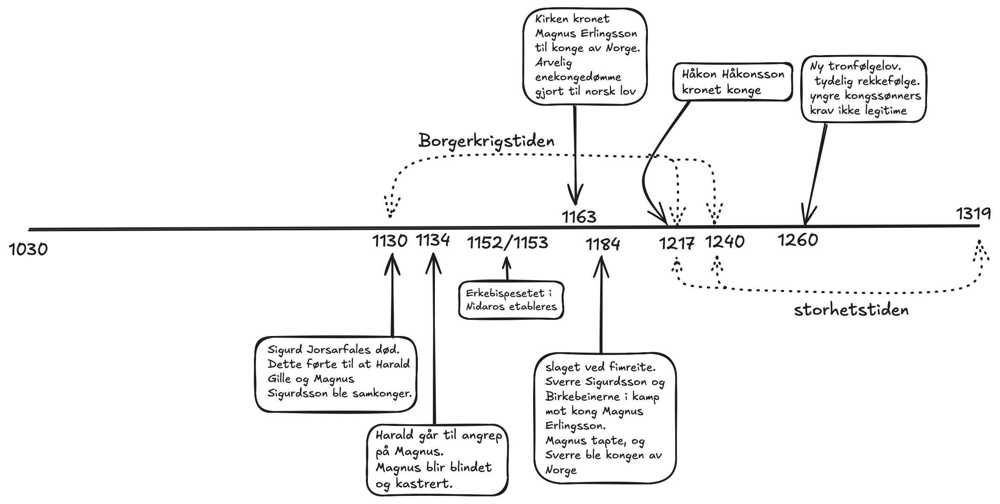

Oppgave
1: lag ei tidslinje ved hjelp av årstall og hendelser som er nevnt i
teksten. forklar hvordan de ulike hendelsene og personene du har notert,
henger sammen med hverandre.
- sigurd jorsafales dør, som fører til at harald gille og hans nevø
magnus sigurdsson blir samkonger. de hersker relativt fredelig sammen
frem til en stidelighet i 1134, hvor Harald går til angrep på Magnus,
som ender opp med å bli blindet og kastrert. Harald blir enekonge.
blindingen og kasterringen av magnus markerte starten på
borgerkrigstiden i norge. erkebispesetet i nidaros etableres i
1152/1153. dette markerer at kirken får en mektigere posisjon i norge.
1163 blir magnus erlingsson den første kongen til å bli kronet av
kirken, etter at hans far, erling skakke, brukte sin posisjon hos
erkepiskesetet i nidaros til å få kirken til å krone magnus. samtidig
som dette ble det holdt et riksmøte, hvor arvelig enekongedømme ble
vedtatt som norsk lov. 1184 ved slaget i femreite dro sverre sigurdsson
med birkebeinerne til angrep på magnus erlignsson, hvor magnus tapte og
sverre ble kronet til konge. 1217 ble håkon håkonsson valgt til konge av
birkebeinerne. samtidig som håkon ble kronet til konge, tok
stridighetene gradvis slutt, og siste motstandt ble slått ned i 1240.
dette markerte slutten på borgerkrigstiden, og starten på storhetstiden.
1260 kom ny tronfølgelov, som definerte en tydeligere reggefølge, hvor
yngre kongssønner ikke lenger hadde legitimt krav på kronen. dermed
regjerte etterkommerne av sverre sigurdsson frem til 1319.
